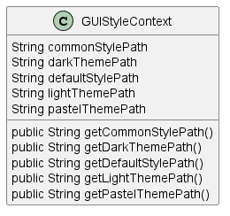

Class Diagram

Annotations
Relationships
| Type | Target | Details |
|---|
Fields
| Visibility | Type | Name | Annotations | Description |
|---|---|---|---|---|
| private | String | commonStylePath | Description placeholder | |
| private | String | darkThemePath | Description placeholder | |
| private | String | defaultStylePath | Description placeholder | |
| private | String | lightThemePath | Description placeholder | |
| private | String | pastelThemePath | Description placeholder |
Constructors
| Visibility | Name | Parameters | Annotations | Description |
|---|---|---|---|---|
| public | GUIStyleContext | String darkThemePath, String lightThemePath, String pastelThemePath, String commonStylePath, String defaultStylePath | Description placeholder |
Methods
| Visibility | Return Type | Name | Annotations | Description |
|---|---|---|---|---|
| public | String | getCommonStylePath() | Description placeholder | |
| public | String | getDarkThemePath() | Description placeholder | |
| public | String | getDefaultStylePath() | Description placeholder | |
| public | String | getLightThemePath() | Description placeholder | |
| public | String | getPastelThemePath() | Description placeholder |